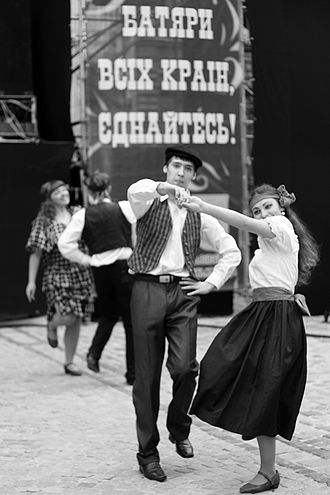

Львів — споконвічне місто українсько-польського прикордоння, в якому століттями змішувалися традиції, культури і мови. Так, унаслідок взаємних запозичень, наприкінці XIX століття у міському середовищі сформувалася львівська ґвара — говір, що утворився внаслідок змішання української і польської мов з вкрапленнями німецької та єврейської лексики.
на головну